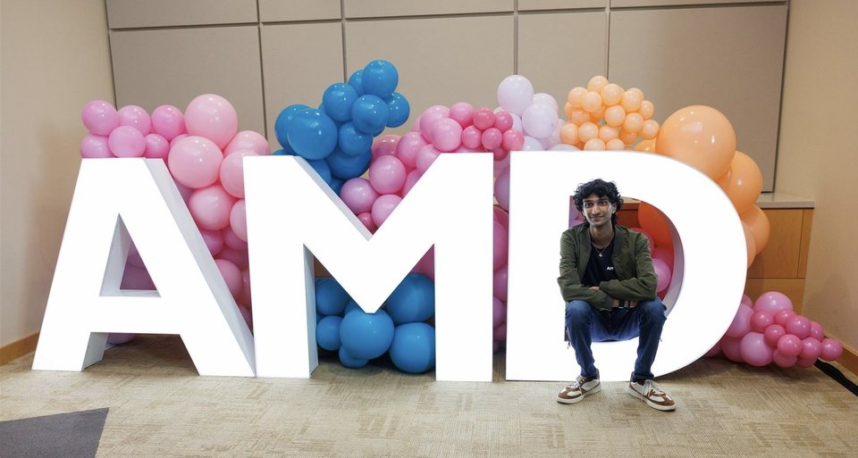

MAY — AUG 2025
AMD↗
Platform Design Engineer Intern
Austin, TX
During my internship at AMD, I worked as a Platform Design Engineer Intern in Austin, TX responsible for designing and validating server side motherboard PCBs for AMD's next-generation EPYC processor line. This included PCB rework, designing custom add-in test cards, and testing low speed IO interfaces (I2C, I3C, SPI) using an oscilloscope to ensure signal integrity and follow timing constraints.
This internship taught me a lot of fundamental ECE skills like PCB rework and oscilloscope analysis. Overall, it was a great oppurtunity and a valuable learning experience for me to grow and develop as a professional. It also allowed me to hone in on potential career I wanted to pursue moving forward.